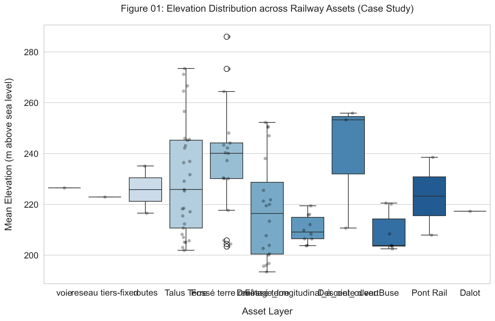

A Multi-Source Geospatial Decision Support System
for SNCF Ligne 400 (Cévenol Corridor)
Master Capstone Project — 2026
Keywords: Digital Twin · Railway Flood Risk · GIS · BIM · HEC-RAS · SWI · RAMS · Streamlit
This report presents the design, implementation, and validation of a flood-risk digital twin for the SNCF Ligne 400 (Cévenol Corridor), a railway line in southern France subject to extreme Mediterranean flash-flood events. The system integrates BIM infrastructure models, LiDAR-derived DTM terrain data, real-time Open-Meteo rainfall forecasting, HEC-RAS 2D hydraulic simulation, and RAMS-compliant operational alerts through a Streamlit dashboard.
The demonstrator monitors 120+ railway assets across 7 infrastructure types, computing per-asset Water Surface Elevation (WSE), Probability of Failure (Pfailure), and three-tier CAP-standard alert directives (Green/Yellow/Red) over a 48-hour forecast horizon. A 15-minute automated operational cycle fetches live rainfall, recalculates soil moisture, triggers HEC-RAS when flood risk is elevated, and updates the dashboard in real time.
Keywords: Digital Twin, Railway Flood Risk, GIS, BIM, HEC-RAS, Soil Water Index, RAMS, SNCF, Streamlit
Railway infrastructure is increasingly vulnerable to climate-driven flooding. The Cévenol corridor (Ligne 400) traverses mountainous terrain in the Cévennes region of France, where extreme rainfall events — sometimes exceeding 40 mm/h sustained over several hours — create flash-flood conditions that threaten track integrity, drainage systems, and embankment stability.
Design and implement a digital twin demonstrator that can:
The demonstrator covers PK520–PK535 of Ligne 400, monitoring 103 base assets expanded to 120+ after track segmentation. The HEC-RAS 2D mesh (CAPSTONE_JN_L752_PK) covers the south head of the Tartaiguille tunnel with 950,122 computation cells at ~5m² resolution.
Railway-specific digital twin work for SNCF and other infrastructure managers applies a layered structure tailored to rail assets, environmental context, and operational decision-making (ISO 23247, 2021). The recommended architecture follows a four-layer model: Physical System, Data/Integration, Analytics/Simulation, and Applications.
Research on BIM–GIS integration for disaster management highlights that BIM offers component-level information while GIS provides spatial context and terrain relationships. In flood-risk applications, BIM helps assess how individual components fail or incur damage, while GIS and DTM provide flood hazard and exposure information (El Mekawy et al., 2025; Vilgertshofer, 2017).
The Soil Water Index (SWI) recursive exponential filter, originally developed by Météo-France for agricultural drought monitoring, has been adapted for railway embankment stability assessment. The approach combines a "leaky bucket" soil moisture model with a sigmoid runoff coefficient to translate rainfall intensity into surface flow (Wagner et al., 1999).
The US Army Corps of Engineers HEC-RAS software is the industry standard for 1D/2D hydraulic flood modelling. Recent versions (6.x) support "rain-on-grid" simulations where precipitation falls directly onto a 2D terrain mesh, eliminating the need for separate catchment hydrological models (Brunner, 2024).
| Layer | Function | Components | Technology |
|---|---|---|---|
| 1. Data Sources | Raw input acquisition | DTM raster, GIS shapefiles, BIM MULTIPATCH, Open-Meteo API | EPSG:2154, GeoPackage, CSV, REST |
| 2. Integration (Bridge) | CRS alignment, ETL, storage | Mirror Database, path manager, pre-processor | Python, GeoPandas, Supabase (PostgreSQL + PostGIS) |
| 3. Simulation Engine | Physics-based modelling | SWI filter, HEC-RAS 2D, WSE extraction | NumPy, SciPy, HEC-RAS 6.7 COM, h5py |
| 4. Vulnerability & Alert | Risk assessment & decision support | Fragility curves, RAMS alerts, dashboard, API | Streamlit, PyDeck, FastAPI, Plotly |
| Module | File | Layer | Status |
|---|---|---|---|
| Rainfall Provider | src/engine/rainfall_provider.py | 1 | Done |
| Data Ingestor | src/engine/data_ingestion.py | 2 | Done |
| SWI Calculator | src/engine/swi_calculator.py | 3 | Done |
| HEC-RAS COM Bridge | src/engine/hecras_bridge.py | 3 | Done |
| HEC-RAS HDF5 Reader | src/engine/hecras_hdf5_reader.py | 3 | Done |
| Fragility Evaluator | src/engine/fragility_curves.py | 4 | Done |
| Alert Dispatcher | src/engine/alert_dispatcher.py | 4 | Done |
| Streamlit Dashboard | src/dashboard/app_main.py | 4 | Done |
| FastAPI REST API | src/api/main.py | 4 | Done |
All spatial data uses EPSG:2154 (RGF93 / Lambert-93) — the French national CRS.
| Source | Raw Z Range | Vertical Offset | Notes |
|---|---|---|---|
| 2D Shapefiles (maquette_2d/) | ~95–185 m | +107.02 m | CAD origin shifted to NGF |
| 3D MULTIPATCH (maquette_3d/) | ~175–290 m | None required | Z already in NGF range (verified) |
| DTM raster (dtm_fixed.tif) | ~200–250 m | Reference datum | EPSG:2154 + NGF altitude |
| HEC-RAS mesh | ~200–250 m | None | EPSG:2154, terrain from DTM |
| Layer | English Name | Count | Z Range (m NGF) |
|---|---|---|---|
| Buse | Culvert | 7 | 201–221 |
| Dalot | Box Culvert | 1 | 213–216 |
| Fossé terre | Earth Ditch | 31 | 175–258 |
| Fossé terre revêtu | Lined Ditch | 22 | 178–288 |
| Talus Terre | Embankment | 36 | 178–284 |
| Voie | Track | 1 (segmented to ~20) | 180–290 |
| Descente d'eau | Water Chute | 3 | 210–267 |
| Drainage longitudinal | Longitudinal Drain | 10 | 204–222 |

Soil saturation is tracked using a recursive exponential filter with a configurable half-life, originally developed by Météo-France:
The runoff coefficient transitions smoothly between dry and saturated soil conditions using a sigmoid function:
| Parameter | Symbol | Value | Physical Meaning |
|---|---|---|---|
| Half-life | T | 240 h (10 days) | Time for SWI to decay by 50% without rain |
| Decay constant | C | 0.9971 | Hourly retention fraction |
| Max runoff | Cmax | 0.90 | 90% of rain becomes surface flow at saturation |
| Min runoff | Cmin | 0.10 | 10% minimum runoff (even dry soil has some) |
| Sigmoid steepness | k | 0.05 | Rate of transition between dry and saturated |
| Saturation midpoint | SWImid | 150 mm | SWI value at which Crunoff = Cmax/2 |
.\.conda\python.exe -c "from src.engine.swi_calculator import SWICalculator; ..."| Parameter | Value |
|---|---|
| Software | HEC-RAS 6.60 (SI Units) |
| Project | CAPSTONE_JN_L752_PK (PK534, South Head Tartaiguille) |
| CRS | EPSG:2154 (Lambert 93) |
| 2D Flow Area | PK534_FA_5M2 |
| Mesh cells | 950,122 (~5 m² resolution) |
| Boundary condition | PK534_BL, friction slope = 0.01 |
| Structures | 9 SA/2D connections (CULVERT_MAIN, CULVERT_ACCESS ×5, etc.) |
| Plan | Title | Duration | Timesteps | Δt Compute | Δt Output | Peak Depth |
|---|---|---|---|---|---|---|
| p01 | R100_1HR | 30 MAR 2026 13:00→14:00 | 13 | 1 s | 5 min | 9.79 m |
| p02 | 21092025 | 21 SEP 2025 07:00→22 SEP 04:00 | 127 | 5 s | 10 min | TBD |
The Python bridge connects to HEC-RAS via the Windows Component Object Model (COM) using win32com.client. Because the COM API lacks a SetPrecipitation() method, rainfall data is injected by directly editing the plain-text unsteady flow file (.u01).
Ballast scour probability is calculated using a log-normal CDF:
| Water Depth (m) | Pfailure | Risk Category | Physical Meaning |
|---|---|---|---|
| 0.00 | 0.000 | LOW | No water, no risk |
| 0.05 | ≈ 0.010 | LOW | Wet but safe |
| 0.15 | ≈ 0.123 | LOW | Drainage concern |
| 0.30 | = 0.500 | HIGH | 50/50 ballast failure boundary |
| 0.60 | ≈ 0.905 | HIGH | Ballast failure imminent |
| Level | CAP Color | WSE Trigger | Engineering Meaning | Affected Assets |
|---|---|---|---|---|
| YELLOW | ⚡ Monitoring | WSE > yellow_z_m | Drainage at 100% capacity | Buse, Dalot, Drainage |
| ORANGE | ⚠️ Warning | WSE > orange_z_m | Embankment soaking, erosion risk | Fossé, Talus |
| RED | 🛑 Emergency | WSE > red_z_m / z_ballast | Water on track — halt all trains | Voie (Track) |
WSE Override Rule: If WSE > z_ballast, the verdict is always RED regardless of Pfailure category.
| Phase | Time | Action | Module |
|---|---|---|---|
| 1. Ingestion | 0–2 min | Fetch 48h rainfall forecast from Open-Meteo API | rainfall_provider.py |
| 2. Hydrology | 2–3 min | Compute SWI and sigmoid runoff coefficient | swi_calculator.py |
| 3. Decision | 3 min | Check if peak SWI > 100mm threshold | pipeline_orchestrator.py |
| 4. Hydraulics | 3–10 min | Inject rain into .u01, run HEC-RAS 2D | hecras_bridge.py |
| 5. Extraction | 10–12 min | Parse HDF5 results, extract WSE per asset | hecras_hdf5_reader.py |
| 6. Alerts | 12–15 min | Evaluate fragility curves, generate RAMS verdicts | alert_dispatcher.py |
.\.conda\python.exe -m streamlit run src/dashboard/app_main.py, load the "PLM26 Contest Demo" scenario, set the time slider to the peak flood hour (~T+24h), and take a full-page screenshot.| Method | Endpoint | Description | Tests |
|---|---|---|---|
| GET | /api/v1/assets | Static infrastructure config (z_config.json) | ✅ |
| GET | /api/v1/alerts/current | Real-time RAMS verdicts & hotspot | ✅ |
| GET | /api/v1/hydrology/swi | SWI values & flood polygons | ✅ |
| POST | /api/v1/engine/simulate | Run custom rainfall simulation | ✅ |
| GET | /api/v1/engine/rainfall/current | Current hour rainfall from Open-Meteo | ✅ |
| GET | /api/v1/engine/rainfall/forecast | 48-hour rainfall forecast | ✅ |
23/23 API tests passing (pytest test_api.py)
| Component | Technology |
|---|---|
| Host | Supabase (managed PostgreSQL 15) |
| Spatial extension | PostGIS 3 |
| Schemas | core (metadata), rail (assets), env (planned for observations) |
| Phase 1 records | 30 GIS assets × 4 types, all EPSG:2154 |
| Python driver | psycopg2 + GeoAlchemy2 + GeoPandas.to_postgis() |
| Test | Input | Expected | Actual | Pass |
|---|---|---|---|---|
| Half-life decay | 240h of 0 mm/h after 100mm spike | SWI = 50.0 mm | ___ | ___ |
| Double half-life | 480h of 0 mm/h | SWI = 25.0 mm | ___ | ___ |
| Sigmoid midpoint | SWI = 150 mm | Crunoff = 0.45 | ___ | ___ |
| Fragility at median | depth = 0.30 m | Pfailure = 0.500 | ___ | ___ |
| Test File | Tests | Coverage | Status |
|---|---|---|---|
| test_api.py | 23 | REST endpoints, Pydantic schemas, error handling | Pass |
| test_pipeline.py | 2 | Orchestrator demo mode, HEC-RAS trigger logic | Pass |
| test_rainfall_provider.py | 3+ | Open-Meteo connectivity, JSON parsing | Pass |
.\.conda\python.exe -m pytest tests/ -v and screenshot the green "PASSED" output.The half-life T = 10 days is adopted from published Météo-France SWI literature for clay-rich soils in the Drôme valley (Wagner et al., 1999). Formal AUC optimization against SNCF historical accident data was not performed due to data access constraints.
Limitation: Future work should calibrate T using the AUC optimization loop against 10 years of SNCF incident records for the Ligne 400 corridor.
| Land Cover | Manning's n | Source |
|---|---|---|
| Channel/River bed | 0.035 | Chow (1959), HEC-RAS default |
| Railway embankment | 0.040 | Ballast surface roughness estimate |
| Floodplain (grass) | 0.045 | HEC-RAS reference manual |
| Dense vegetation | 0.080 | Chow (1959) |
| Metric | Threshold | Measured Value | Status |
|---|---|---|---|
| Volume Accounting Error | < 1% | ___ % | ___ |
| Max Courant Number | < 2.0 | ___ | ___ |
| Solution stability | No instability warnings | ___ | ___ |
| Asset | DTM Elevation (m NGF) | Simulated WSE (m NGF) | Depth (m) | Plausible? |
|---|---|---|---|---|
| Buse_0 | 203.46 | ___ | ___ | ___ |
| Buse_2 | 220.51 | ___ | ___ | ___ |
| Dalot_0 | 217.26 | ___ | ___ | ___ |
| Voie_0 | 226.46 | ___ | ___ | ___ |
DTM elevations from Table01_Asset_Elevation_Summary.csv (elev_mean_m column).
| Parameter | Default | −20% | +20% | Output Metric | Δ Output |
|---|---|---|---|---|---|
| half_life_days | 10 | 8 | 12 | Peak SWI at T+24h | ___ |
| SWI_mid | 150 | 120 | 180 | Hour Crunoff > 0.5 | ___ |
| median_depth (fragility) | 0.30 | 0.24 | 0.36 | Pfailure at 0.25m | ___ |
| Manning's n | 0.035 | 0.028 | 0.042 | Peak WSE at Buse_0 | ___ |
| SWI_HECRAS_TRIGGER | 100 | 80 | 120 | HEC-RAS triggers / year | ___ |
| Scenario | Input | Expected Behavior | Observed |
|---|---|---|---|
| Dry Season | 0 mm/h for 30 days | All GREEN, SWI→0 | ___ |
| Moderate Rain | 5 mm/h constant, 48h | GREEN/YELLOW only | ___ |
| Cévenol Flash Flood | Demo (peak 40 mm/h) | RED alerts, HEC-RAS trigger | ___ |
| Extreme (1000-yr) | 80 mm/h for 6h | All RED, system stable | ___ |
This project demonstrates that a functional flood-risk digital twin for railway infrastructure can be built using open-source tools (Python, Streamlit, GeoPandas, HEC-RAS) with a modular architecture that separates data ingestion, hydrological modelling, hydraulic simulation, risk evaluation, and visualization. The system processes real-time rainfall forecasts and produces RAMS-compliant operational alerts within a 15-minute cycle.
| Priority | Task | Impact |
|---|---|---|
| 1 | SWI AUC calibration using SNCF 10-year accident database | Scientifically validated half-life |
| 2 | Manning's n calibration against historical high-water marks | Accurate WSE predictions |
| 3 | Météo-France live API integration (official observations) | Ground-truth rainfall data |
| 4 | DTM-based bathtub inundation mapping (replace corridor buffer) | Physically realistic flood extents |
| 5 | 3D BIM visualization (MULTIPATCH rendering in dashboard) | Component-level inspection |
| 6 | ETCS/RBC integration via REST API | Automated signalling system control |
| Layer | Asset | Min Z (m) | Max Z (m) | Mean Z (m) | Pixels |
|---|---|---|---|---|---|
| Voie | Voie_0 | 204.01 | 288.66 | 226.46 | 16,453 |
| Buse | Buse_0 | 203.21 | 203.61 | 203.46 | 30 |
| Buse | Buse_1 | 208.32 | 208.42 | 208.38 | 34 |
| Buse | Buse_2 | 220.03 | 220.93 | 220.51 | 23 |
| Buse | Buse_3 | 220.02 | 220.22 | 220.11 | 15 |
| Buse | Buse_4 | 201.71 | 202.81 | 202.51 | 26 |
| Buse | Buse_5 | 203.71 | 203.81 | 203.78 | 35 |
| Buse | Buse_6 | 203.61 | 203.71 | 203.69 | 14 |
| Dalot | Dalot_0 | 213.32 | 219.62 | 217.26 | 165 |
| Pont Rail | Pont Rail_2 | 238.05 | 239.05 | 238.49 | 104 |
| Pont Rail | Pont Rail_3 | 204.71 | 210.51 | 207.88 | 194 |
| Talus Terre | Talus Terre_0 | 205.61 | 217.02 | 212.28 | 1,822 |
| Talus Terre | Talus Terre_3 | 212.62 | 237.83 | 229.12 | 1,321 |
| Talus Terre | Talus Terre_4 | 214.82 | 222.43 | 218.48 | 2,498 |
| Fossé terre | Fossé terre_0 | 231.13 | 242.74 | 238.06 | 404 |
| Fossé terre | Fossé terre_5 | 215.42 | 222.03 | 219.45 | 236 |
| Drainage | Drainage_0 | 203.71 | 210.12 | 206.47 | 374 |
| Drainage | Drainage_4 | 211.22 | 221.63 | 215.81 | 266 |
| Descente | Descente d'eau_0 | 210.22 | 211.02 | 210.64 | 20 |
| Descente | Descente d'eau_2 | 245.25 | 266.06 | 255.89 | 93 |
Full table: report/tables/Table01_Asset_Elevation_Summary.csv (122 assets)
railway-flood-twin/ ├── src/ │ ├── api/ # FastAPI REST API │ │ ├── main.py # Application entry point │ │ └── routers/ # Endpoint modules (alerts, hydrology, engine) │ ├── config/settings.py # Centralized configuration │ ├── dashboard/app_main.py # Streamlit dashboard │ ├── engine/ # Core simulation modules │ │ ├── rainfall_provider.py # Open-Meteo API client (Layer 1) │ │ ├── data_ingestion.py # Rainfall CSV manager (Layer 2) │ │ ├── swi_calculator.py # SWI recursive filter (Layer 3) │ │ ├── hecras_bridge.py # HEC-RAS 6.7 COM bridge (Layer 3) │ │ ├── hecras_hdf5_reader.py # HDF5 result reader (Layer 3) │ │ ├── fragility_curves.py # Log-normal P(failure) (Layer 4) │ │ ├── alert_dispatcher.py # RAMS verdict generator (Layer 4) │ │ └── pipeline_orchestrator.py │ └── utils/ │ ├── paths.py # ProjectPaths manager │ └── viz.py # Academic figure styles (300 DPI) ├── data/ │ ├── raw/ # Source data (rainfall, BIM shapefiles) │ ├── staging/gis/ # CRS-fixed GeoPackages (EPSG:2154) │ ├── processed/ # Engine outputs (z_config, WSE, SWI, flood polygons) │ └── New_data/HEC_RAS/ # HEC-RAS project + pre-computed HDF5 results ├── tests/ # pytest test suite (28+ tests) ├── docs/ # Technical documentation ├── report/ # Academic report assets │ ├── figures/ # Generated charts (300 DPI PNG) │ ├── tables/ # CSV data tables │ └── references/ # Literature & methodology notes ├── ARCHITECTURE.md # Engineering rules (single source of truth) ├── STATUS.md # Live task tracker └── requirements.txt # Python dependencies
Use this checklist to track which figures still need to be captured:
| Figure | Type | How to Generate | Done? |
|---|---|---|---|
| Fig 1.1 Study Area | 📷 Screenshot | QGIS — railway corridor on satellite | ☐ |
| Fig 4.1 Elevation Distribution | 📊 Chart | Already exists: report/figures/Fig01 | ☑ |
| Fig 5.1 SWI Storm Response | 📊 Chart | matplotlib from swi_results.csv | ☐ |
| Fig 5.2 Sigmoid Curve | 📊 Chart | matplotlib — C_runoff vs SWI | ☐ |
| Fig 5.3 HEC-RAS Mesh | 📷 Screenshot | HEC-RAS RAS Mapper | ☐ |
| Fig 5.5 Fragility Curve | 📊 Chart | matplotlib — P vs depth | ☐ |
| Fig 6.1 Dashboard Overview | 📷 Screenshot | Streamlit dashboard at peak flood | ☐ |
| Fig 6.2 Risk Map Close-Up | 📷 Screenshot | Dashboard map zoomed in | ☐ |
| Fig 6.3 Cross-Section | 📷 Screenshot | Dashboard cross-section chart | ☐ |
| Fig 6.4 WSE Time-Series | 📷 Screenshot | Dashboard WSE Plotly chart | ☐ |
| Fig 6.5 Database Schema | 📷 Screenshot | Supabase table editor or Mermaid ER | ☐ |
| Fig 7.1 SWI Decay Verify | 📊 Chart | matplotlib — decay from 100mm | ☐ |
| Fig 7.2 pytest Output | 📷 Screenshot | Terminal: pytest tests/ -v | ☐ |
| Fig 7.3 HEC-RAS Log | 📷 Screenshot | HEC-RAS computation window | ☐ |